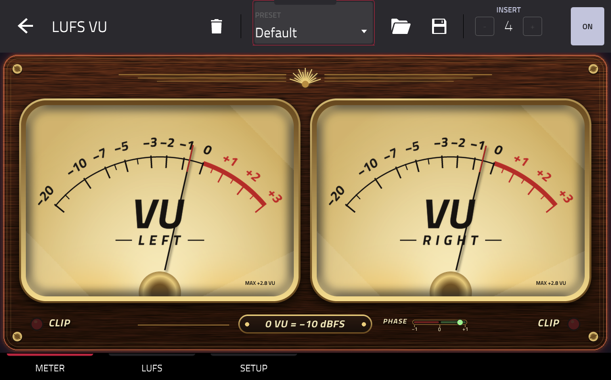
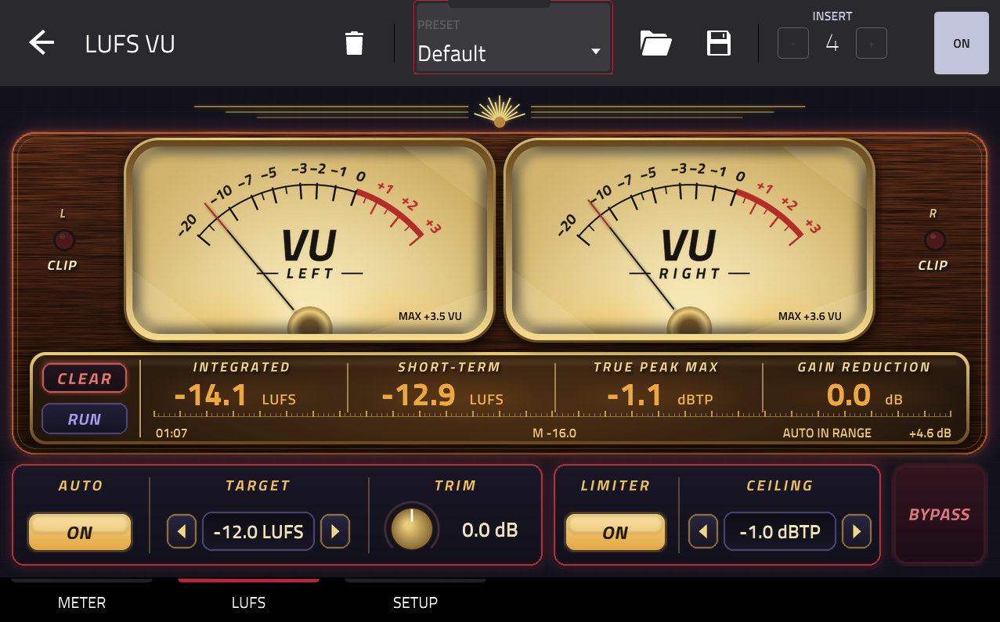
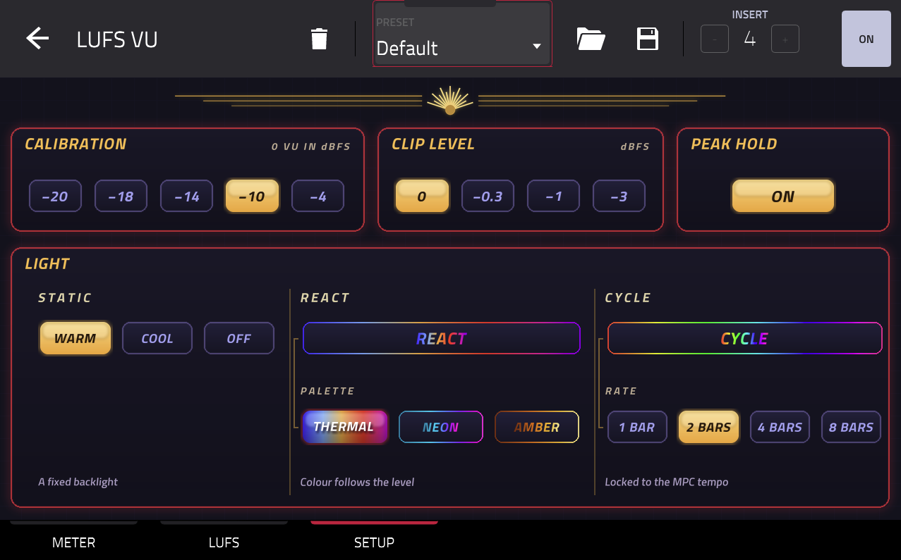

LUFS VU
Analog VU meters, EBU R 128 loudness and a true-peak limiter for Akai MPC standalone
Version 1.0.0

LUFS VU is an insert effect for MPC standalone hardware. It has three pages:
- METER: a pair of classic VU meters.
- LUFS: a loudness meter with optional automatic loudness and a true-peak limiter.
- SETUP: calibration and the dial lighting.
Out of the box it only measures: the audio passes through untouched, with no added delay.
Requirements
- An MPC standalone running MPC OS 3.10.1 or later (tested on an MPC Live III).
- External plugins switched on: Preferences → Enhancements (Beta), then turn on Enable Enhancements and External Plugin Support.
Install
- Unzip the download. Inside is a folder named
Slow Ops - VST - LUFS VU. - Copy that folder into a folder named exactly
VST2 Pluginsat the top level of a USB drive, an SD card or the MPC's internal drive. CreateVST2 Pluginsif it isn't there. Keep the plugin folder's name exactly as it is: the MPC uses it to find the screens. - Restart the MPC.
- Add Slow Ops › LUFS VU as an insert effect on a track, program or the master. You'll find it in the plugin browser under External Plugins.
Slow Ops - VST - VU Meter folder when you install this one, then add LUFS VU again on any track that used the old one.Using it
Touch, then turn. Touch any control (a button, a row of choices, the TARGET or CEILING arrows, the TRIM knob) and an amber ring shows it is selected. The MPC's main data wheel then changes it; hold SHIFT for fine steps. Press the data wheel or ENTER for the large editor. The Q-Link knobs work too: the table below lists which knob does what on each page.
Signal path: in → AUTO + TRIM → LIMITER → out. Every meter on every page reads the output, so the pages always agree.
METER
| Control | Q-Link | What it does |
|---|---|---|
| VU needles | – | Average level with real VU ballistics: about 300 ms to settle, a slight overshoot. A VU meter does not show peaks; the CLIP lamps do. |
| CLIP lamps | – | Light when a sample reaches the CLIP LEVEL (set on SETUP). Tap a lamp to reset it and the MAX readings. |
| MAX | – | The highest reading each needle has reached since the last lamp tap. |
| PHASE | – | Stereo correlation: +1 mono-safe, 0 wide, −1 (red) cancels when summed to mono. |
| 0 VU plate | – | Shows the current CALIBRATION. |
| TRIM | 15 | The output TRIM from the LUFS page, on a knob, so you can ride it while watching the needles. |

LUFS
Loudness to ITU-R BS.1770 / EBU R 128, measured on the output.
| Readout | What it shows |
|---|---|
| INTEGRATED | The loudness of the whole programme since CLEAR, in LUFS. Silence and quiet gaps don't pull it down. |
| SHORT-TERM | The last 3 seconds, live. |
| M | Momentary: the last 0.4 seconds (status row). |
| TRUE PEAK MAX | The highest peak between samples since CLEAR, in dBTP. It can read higher than the CLIP lamps, which watch the samples themselves. |
| GAIN REDUCTION | How much the LIMITER is turning down right now. |
| Status row | Time since CLEAR, the AUTO status (LEARNING, ADJUSTING, IN RANGE, HOLD, GAIN LIMIT, LIMITED or CLIP RISK) and the gain AUTO is applying. |
| Control | Q-Link | What it does |
|---|---|---|
| CLEAR | – | Restarts the measurement (INTEGRATED, TRUE PEAK MAX, the time and AUTO's estimate). The audio does not jump. |
| RUN / HOLD | 10 | HOLD freezes INTEGRATED, TRUE PEAK MAX and the time. It is a measurement hold, not a mute. |
| AUTO | 16 | Gently steers the integrated loudness towards TARGET. It listens for about 3 s first, then moves no faster than 0.5 dB per second. It holds through silence, never goes beyond ±12 dB, and glides back to 0 dB when switched off. It is a live best estimate: it can't know how loud the rest of the song will be. |
| TARGET ◀ ▶ | 13 | −23 to −9 LUFS in 0.5 steps (default −14). |
| TRIM | 15 | Output gain, ±12 dB. With AUTO on it offsets the target: TARGET −14 with TRIM +1 gives about −13 LUFS. |
| LIMITER | 9 | A stereo-linked true-peak limiter. While it is on it adds about 3 ms of delay, which is reported to the MPC. |
| CEILING ◀ ▶ | 14 | The highest true peak the LIMITER lets through: −6.0 to −0.1 dBTP (default −1.0). It does nothing while the LIMITER is off. |
| BYPASS | 11 | Output = input, untouched: AUTO, TRIM and the LIMITER are skipped. |

SETUP
| Control | Q-Link | What it does |
|---|---|---|
| CALIBRATION | 13 | Which level reads 0 VU: −20, −18, −14, −10 or −4 dBFS. −18 suits tracking and mixing. Loud, heavily compressed masters pin the needles; try −10 or −4 for them. |
| CLIP LEVEL | 14 | The level that lights the CLIP lamps: 0, −0.3, −1 or −3 dBFS. |
| PEAK HOLD | 10 | ON keeps a CLIP lamp lit for 2 seconds after a clip. |
| LIGHT: STATIC | 15 | A fixed backlight: WARM, COOL or OFF. |
| LIGHT: REACT | 15, 16 | The dials glow with the music's level, in the THERMAL, NEON or AMBER palette. |
| LIGHT: CYCLE | 15, 9 | The dials travel round the colour wheel once every 1, 2, 4 or 8 bars, locked to the MPC's tempo. |
Tips
- Mixing: CALIBRATION −18, and aim for the needles to swing around 0 VU on the loud parts.
- Checking a master: put LUFS VU last on the master, press CLEAR, and play the whole song. INTEGRATED is the song's loudness; keep TRUE PEAK MAX below about −1 dBTP.
- Hands-off loudness: AUTO on, set TARGET, LIMITER on with CEILING −1.0. Give AUTO a few seconds to learn.
- Readings are not saved with the project (they start empty after loading). All settings are saved.
Uninstall
Delete the Slow Ops - VST - LUFS VU folder from VST2 Plugins and restart the MPC. Projects that used it still open, without the effect.